data(iris)
hist(iris$Petal.Length, breaks = 30)
In this lecture, we explore data sets with more than one continuous variable. The main aspects we are concerned with are:
As a motivation, we start by looking at the example of Fisher’s Iris data. We choose one continuous variable, say Petal.Length, and start our exploration with a simple histogram:
data(iris)
hist(iris$Petal.Length, breaks = 30)
There is a clear separation in two distinct groups, but without further exploration we can’t conclude much. Luckily for us, we have other variables in the same data set: let us plot Petal.Length against Petal.Width:
library(ggplot2)
ggplot(iris, aes(x = Petal.Length, y = Petal.Width)) +
geom_point() +
geom_smooth(method = "lm", se = TRUE) +
labs(
x = "Petal Length",
y = "Petal Width",
title = "Petal Width vs Petal Length"
) +
theme_minimal()`geom_smooth()` using formula = 'y ~ x'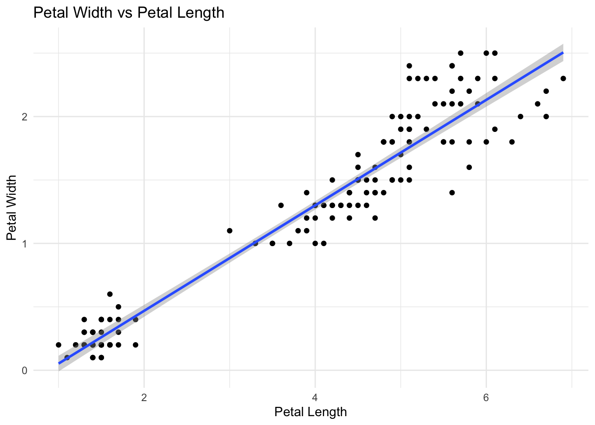
From this simple plot, we reinforce our idea that at least two distinct group of observations are in our data set. Moreover, we can see a strong association, as flowers with longer petals show also a greater width of petals.
Let’s now exploit a third variable, species. This is a categorical variable, containing only three groups. A good solution is then to use colour:
ggplot(iris, aes(x = Petal.Length, y = Petal.Width, color = Species)) +
geom_point() +
geom_smooth(method = "lm", se = TRUE) +
scale_color_manual(
values = c(
setosa = "black",
versicolor = "yellow3",
virginica = "lightblue3"
)
) +
labs(
x = "Petal Length",
y = "Petal Width",
title = "Petal Width vs Petal Length by Species"
) +
theme_minimal()`geom_smooth()` using formula = 'y ~ x'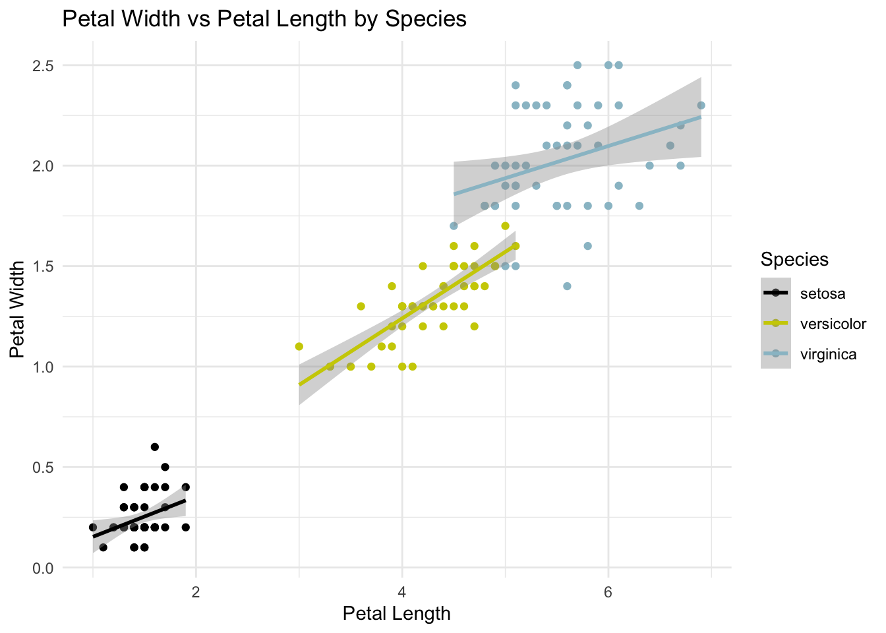
We discover that the two groups of observations correspond to
Moreover, we see that inside each group the correlation between petal length and petal width is much lower: the variable species determines a big proportion of the petal size, and once one knows that two given irises belong to a certain species, Petal.Length is less of a good predictor of Petal.Width.
The takeout message of this example is that assessing more variables allows for the emergence of complex features of a data set.We are now going to see other examples of features of a data set with many continuous variables.
Let’s start our exploration with scatterplots:
For example, let’s consider the Weight and Height of the 10,384 athletes competing in the London 2012 Olympics:
library(VGAMdata)
data(oly12)We can draw a scatterplot of these variables using the plot function:
plot(x=oly12$Height, y=oly12$Weight)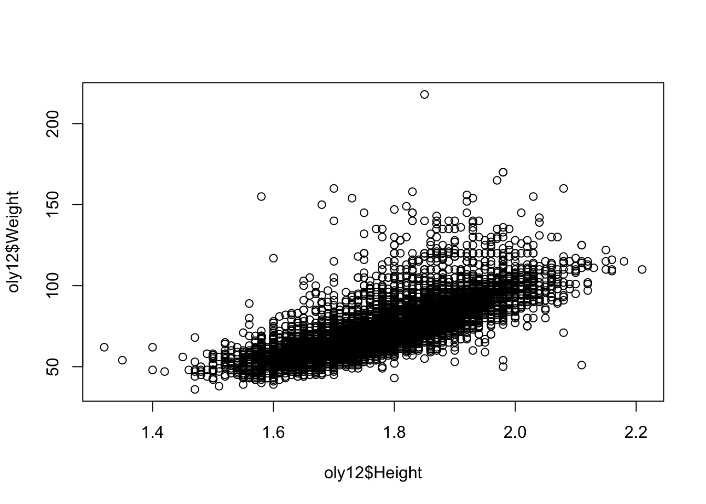
Note the choice of which variable is drawn as the horizontal coordinate and which is the vertical.
The plot function accepts the usual arguments to customise the graphic.
xlab, ylab, main - axis labels and main titlexlim, ylim - axis ranges, a vector of length twopch - changes the plot character, integercol - changes the point colour, either specifying one colour for all points or one colour for each pointcex - relative point size, defaults to 1In particular, the plot character (pch) can be changed to something more solid to give a clearer picture.
plot(x=oly12$Height,y=oly12$Weight,xlab='Height', ylab='Weight',main='',pch=20)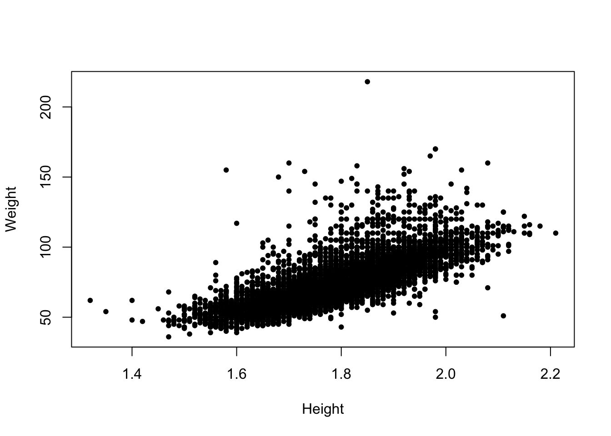
So, what do features do we see in this plot:
Overplotting is a problem in a scatterplot where the drawn data points overlap one another. This typically occurs when there are a large number of data points and/or a small number of unique values in the dataset.
As multiple stacked points look the same as a single point, this makes it difficult to identify areas of high density. In the scatterplot above, we cannot tell if there is one person with a weight over 200 or one hundred.
Possible solutions include:
We can apply transparency to the scatterplot of the Olympic athletes as follows:
library(scales)
plot(x=oly12$Height,y=oly12$Weight,xlab='Height', ylab='Weight',main='',pch=20,
col=alpha('black',0.2)) ## this tells R to use 20% transparent black for each point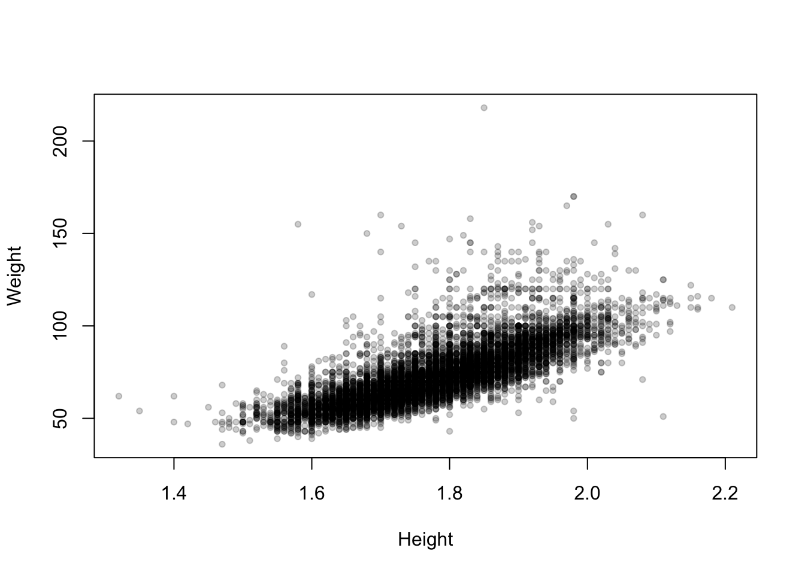
Now the areas of high density in the main cloud of data stand out as darker, and the more unusual values fade out.
library(MASS)
data(geyser)The Old Faithful geyser in Yellowstone National Park, Wyoming, USA which a very regular pattern of eruption.
Consider the duration of the eruptions and the waiting time until the next eruption.
plot(y=geyser$waiting,x=geyser$duration, pch=16, xlab='duration',ylab='waiting')
What can we see?
Download data: movies
Most of the data sets we’ve seen so far are not very big. Consider instead the movies data set, which contained 24 variables and 58 788 cases corresponding to various attributes of different movies taken from IMDB. Let’s focus on two of the variables: the average IMDB user rating, and the number of users who rated that movie on IMDB.
plot(x=movies$votes, y=movies$rating, ylab="Rating", xlab="Votes")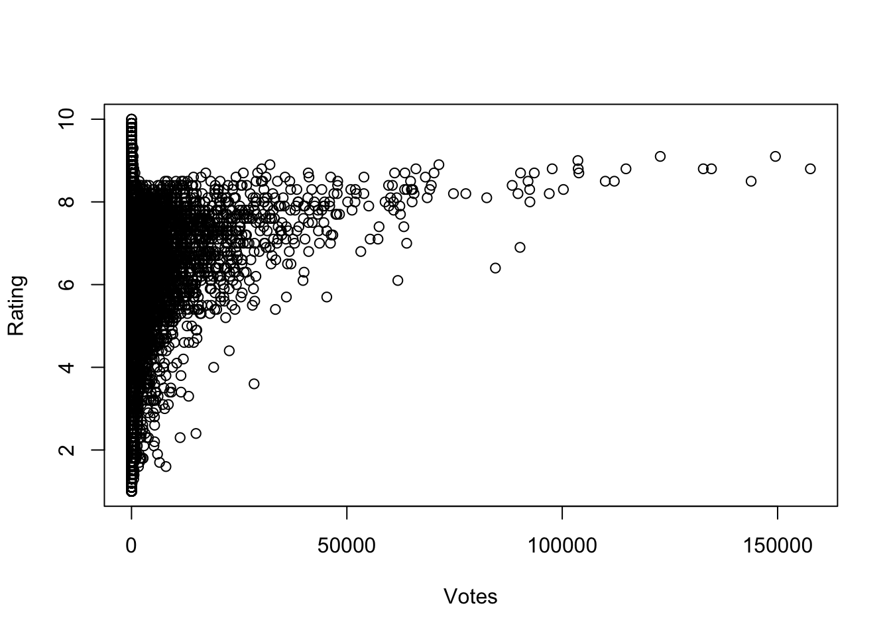
What do we see here?
We can extract a lot of information from a scatterplot!
Patterns and trends observed within a scatterplot can often be explained by the action of other variables.
In particular, other categorical variables may induce different behaviours for each group (e.g. male and female).
Consider the average values of fertility (number of children per mother) versus percentage of contraceptors among women of childbearing age in developing nations around 1990.
library(carData)
data(Robey)
plot(y=Robey$tfr, x=Robey$contraceptors, pch=20,
ylab='Total fertility rate (children per woman)',
xlab='Percent of contraceptors among married women of childbearing age')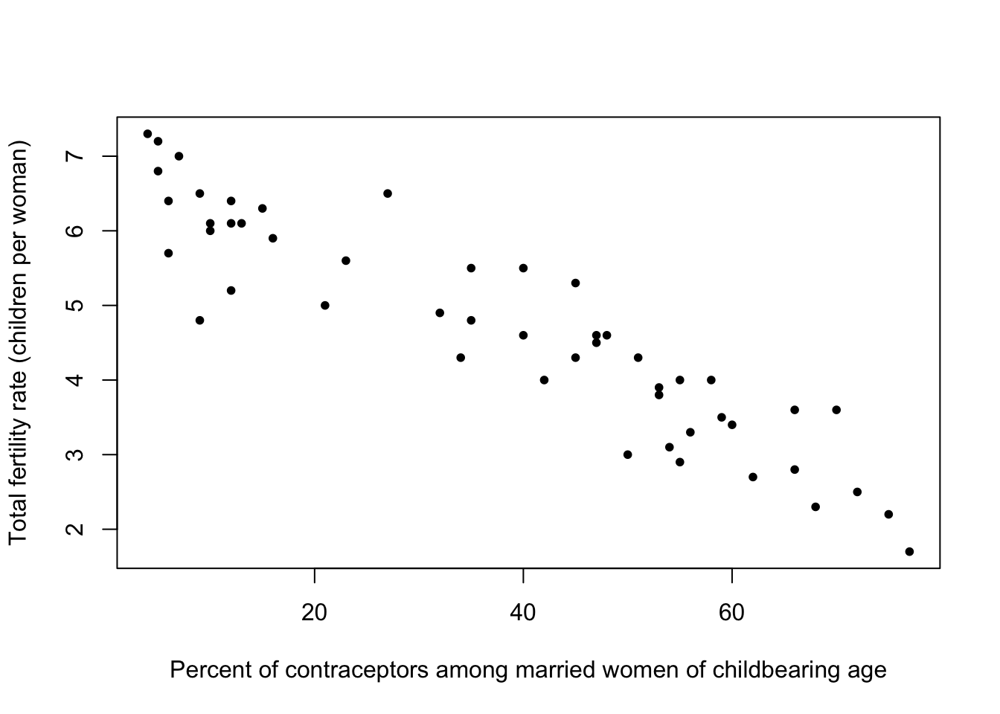
The fertility data set also contains a third variable representing the region of the world, which we can indicate in colour.
plot(y=Robey$tfr, x=Robey$contraceptors, pch=20, col=Robey$region,
ylab='Total fertility rate (children per woman)',
xlab='Percent of contraceptors among married women of childbearing age')
legend(x='topright',pch=20,lwd=NA, col=1:nlevels(Robey$region), legend=levels(Robey$region))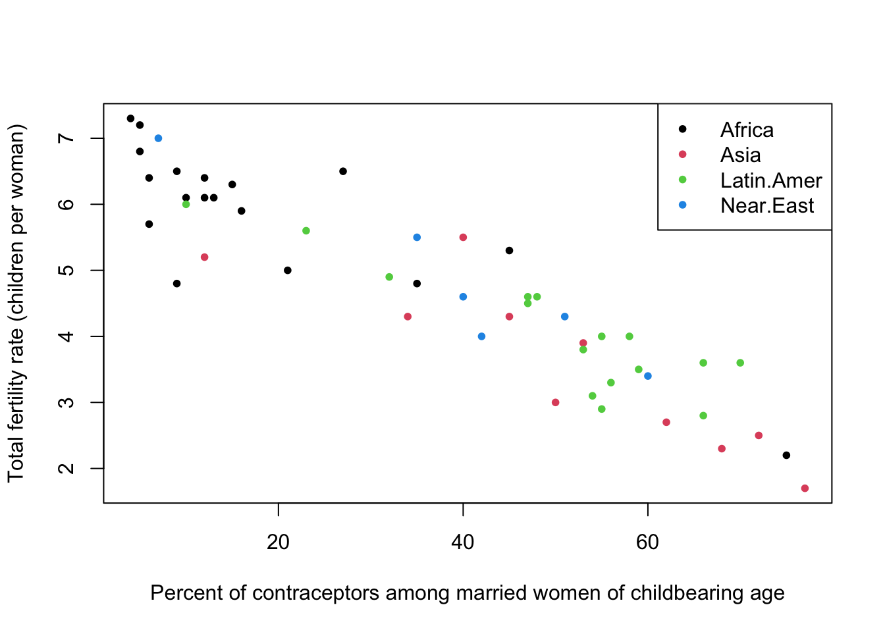
We could have used a different symbol for each region, but this is generally less effective than colour:
plot(y=Robey$tfr, x=Robey$contraceptors, pch=as.numeric(Robey$region),
ylab='Total fertility rate (children per woman)',
xlab='Percent of contraceptors among married women of childbearing age')
legend(x='topright',lwd=NA, pch=1:nlevels(Robey$region), legend=levels(Robey$region))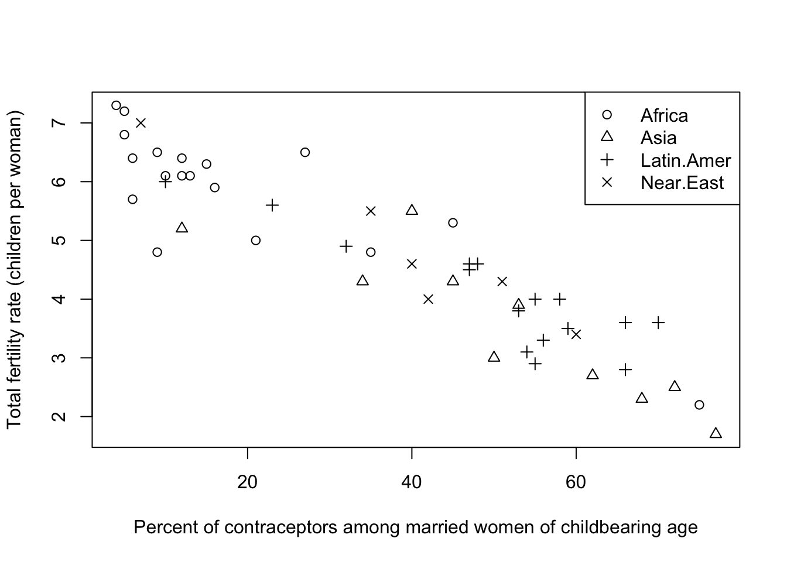
The Olympic athletes data set also could be investigated by using colour to represent Gender. This shows an expected differentiation between the two:
plot(x=oly12$Height,y=oly12$Weight,xlab='Height', ylab='Weight',main='',pch=16,
col=alpha(c('#000000','#ff0000'),0.2)[oly12$Sex])
legend(x='topleft', legend=levels(oly12$Sex), pch=16, col=c(1,2))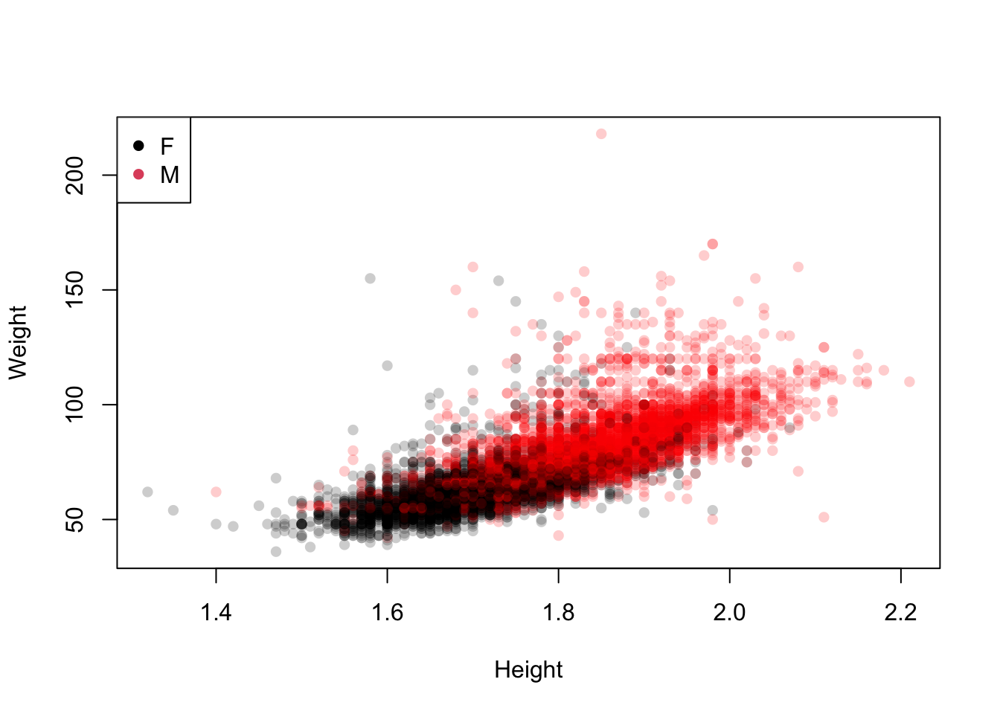
Colouring the 42 sport categories is less helpful.
plot(x=oly12$Height,y=oly12$Weight,xlab='Height', ylab='Weight',main='',pch=16,
col=oly12$Sport)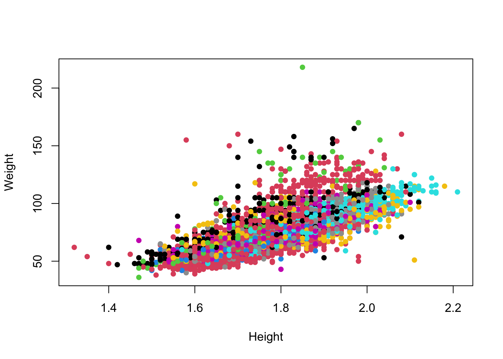
Unfortunately, with many categories the differences between 42 colours become too subtle to detect easily. Colour is only useful when indicating a small number of groups.
In this case, a better solution is to break the data up and draw separate mini scatterplots for each of the 42 sports. This is called a lattice, grid or trellis of plots:
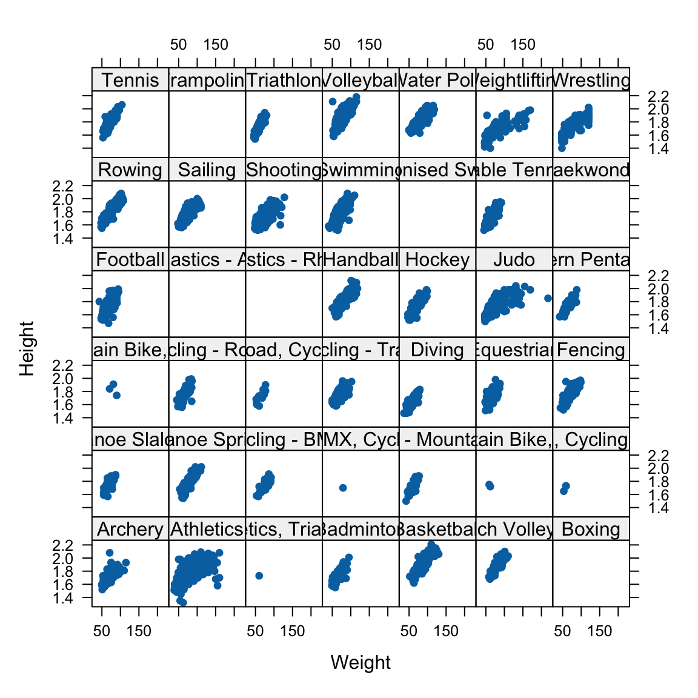
The standard measure of the strength of linear relationship between two variables is the correlation coefficient . Assuming that we have \(n\) pairs of observations \((x_1,y_1)\), …,\((x_n,y_n)\), the correlation coefficient is defined to be: [ r=_{i=1}^n()() ] In R, we can use the cor function to compute this.
The correlation can take any value between \(-1\) and \(+1\), inclusive, with positive values representing positive correlation (as one variable increases, so does the other), and negative values representing negative correlation (as one variable increases, the other decreases). A correlation of \(0\) means uncorrelated: no association (as one variable increases, the other doesn’t consistently increase or decrease).
Thus the value of \(r\) can range from \(r=-1\) (perfect negative correlation) through weaker negative correlation until \(r=0\) (no correlation) through weak positive correlation to \(r=1\) (perfect +ve correlation).
The correlation tells us two things:
For the fertility data:
cor(y=Robey$tfr, x=Robey$contraceptors)[1] -0.9203109The value here is negative reflecting the negative aassociation - the increase in contraception corresponds to a reduction in numbers of children. The value itself is quite large (close to -1) which indicates a strong association - this is reflected by the fact the data are roughly organised along a straight line.
Difficulties with correlation:
Recall, for example, Anscombe’s quartet of data points:
library(datasets)
data(anscombe)
cor(anscombe$x1, anscombe$y1)[1] 0.8164205cor(anscombe$x2, anscombe$y2)[1] 0.8162365cor(anscombe$x3, anscombe$y3)[1] 0.8162867cor(anscombe$x4, anscombe$y4)[1] 0.8165214Their correlations are almost the same (up to 2 decimal places), but the actual patterns of the points are quite different:
par(mfrow=c(2,2),mai = c(0.3, 0.3, 0.3, 0.3))
plot(x=anscombe$x1, y=anscombe$y1,xlab='',ylab='',pch=20,xlim=c(0,20),ylim=c(0,14))
plot(x=anscombe$x2, y=anscombe$y2,xlab='',ylab='',pch=20,xlim=c(0,20),ylim=c(0,14))
plot(x=anscombe$x3, y=anscombe$y3,xlab='',ylab='',pch=20,xlim=c(0,20),ylim=c(0,14))
plot(x=anscombe$x4, y=anscombe$y4,xlab='',ylab='',pch=20,xlim=c(0,20),ylim=c(0,14))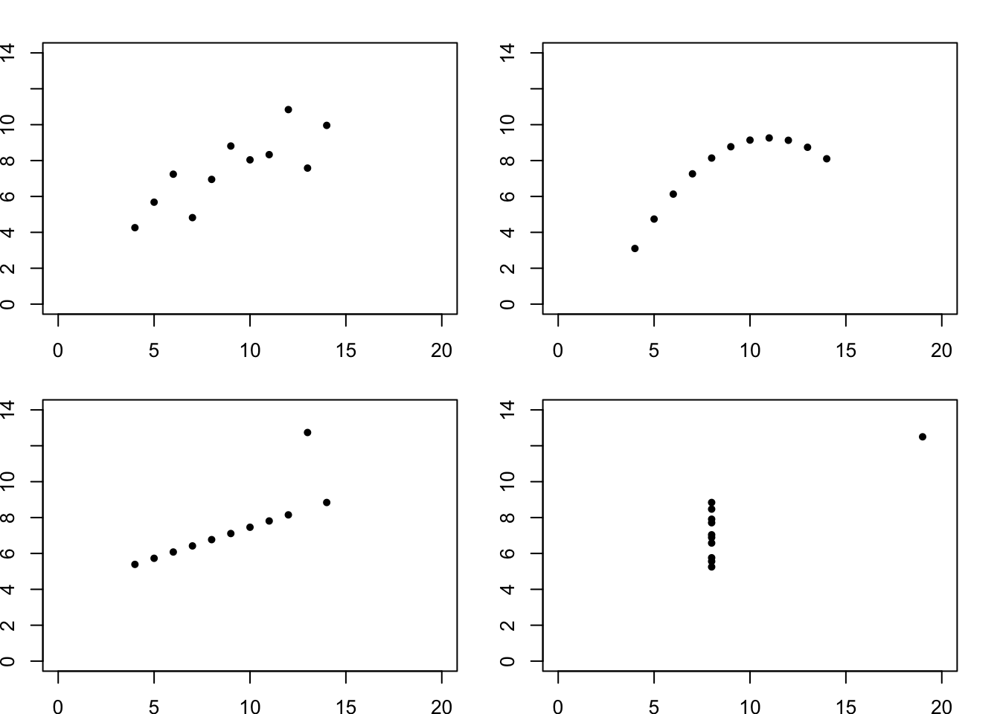
Visualising large numbers of continuous variables has the potential to uncover enven more features, but also presents more challenges.
data(iris)
boxplot(iris[,4:1])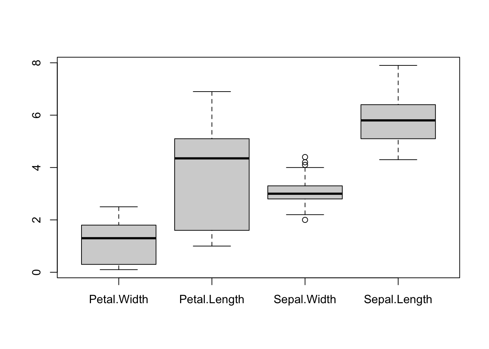
Boxplots are effective for getting an overview of major differences between variables - particularly in terms of their location (position vertically) and scale (length of the boxplot). However, boxplots are too simple to show whether a variable splits into different modes or groups. Boxplots are also fundamentally a 1-dimensional graphic - they cannot detect or display whether the variables are related.
pairs(iris[,4:1], pch=16)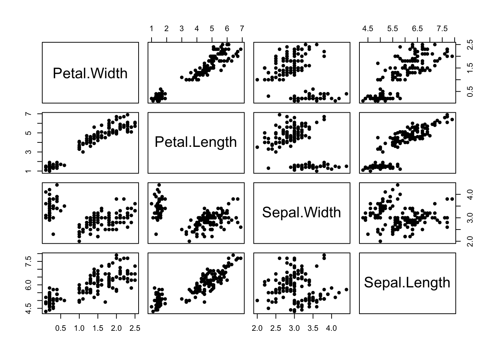
Conversely, the scatterplot matrix exposes a great deal of the structure of the data, and makes relationships clear. Patterns, trends, and groups emerge quite easily and can be easily spotted by eye. But it is not as effective for comparing scales and locations - we still need the boxplots, even if they are limited!
What if we need to include a third numerical variable into a scatter plot? One way to achieve this is a bubble plot, where we use the value of a third variable to control the size of the points we draw on a scatterplot:
library(plotly)
plot_ly(iris, x=~Petal.Width, y=~Petal.Length, size=~Sepal.Width, color=~Species,
sizes = c(1,50), type='scatter', mode='markers', marker = list(opacity = 0.7, sizemode = "diameter"))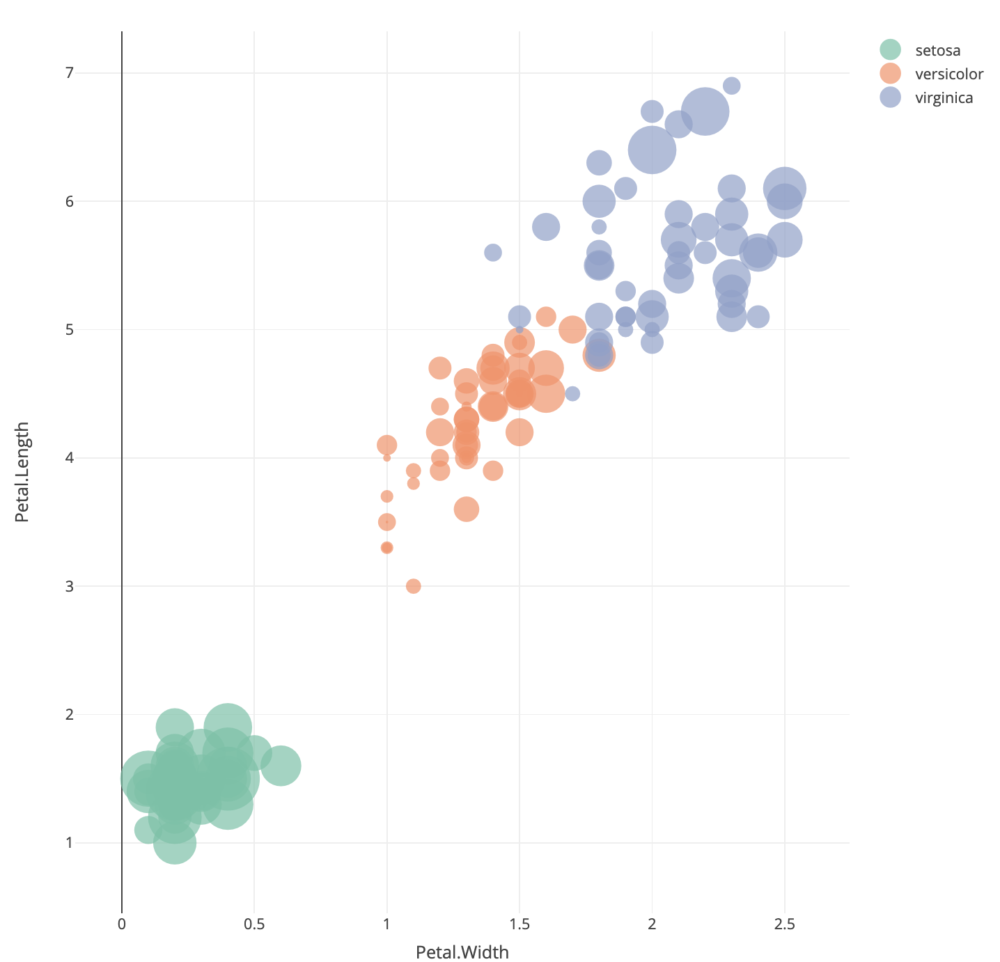
Here we have positioned the points of the iris data according to the Petal measurements and used the size of the point to indicate the Sepal.Width. We can note that the orange points (versicolor) appear to have more small bubbles than the others, and the green points (setosa) look to have larger values.
This technique can be quite effective when the variable corresponding to point size corresponds to some measure of importance, scale, or size (such as population per country, number of samples in a survey, number of patients in a medical trial). While it can be effectively used in three-variable problems, for more variables than this we require other methods.
Dealing with more continuous variables will require scaling up a lot of the familiar techniques from earlier. Individual numerical summaries can still be computed, though it is even more difficult to easily compare. Some of the standard visualisations can be easily applied to many variables, such as histograms and box plots.
One particularly useful technique is to take scatterplots, and draw many of them in a matrix to effectively compare multiple variables at once. Scatterplot matrices are a matrix of scatterplots with each variable plotted against all of the others.
Like the grid or trellis scatterplot we produce an array of plots, but now we plot all variables simultaneously!
These give excellent initial overviews of the relationship between continuous variables in data sets with relatively small numbers of variables.
Let’s use a data set on Swiss banknotes to illustrate variations we can make to a scatterplot matrix.
The data are six measurements on each of 100 genuine and 100 forged Swiss banknotes. The idea is to see if we can distinguish the real notes from the fakes on the basis of the notes dimensions only:
library(car)
Attaching package: 'car'The following object is masked from 'package:VGAM':
logitdata(bank,package="gclus")
scatterplotMatrix(bank[,-1], smooth=FALSE, regLine=FALSE, diagonal=TRUE, groups=bank$Status,
col=c(5,7), pch=c(16,16))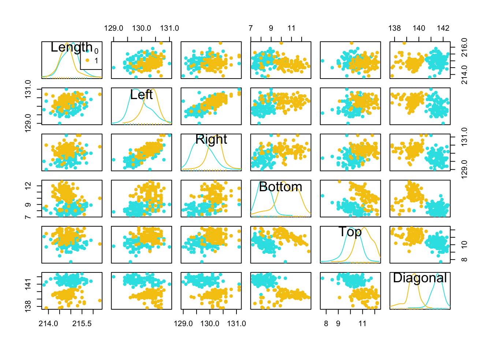
Parallel coordinate plots (PCP) have become a popular tool for highly-multivariate data.
Rather than using perpendicular axes for pairs of variables and points for data, we draw all variables on parallel vertical axes and connect data with lines.
The variables are standardised, so that a common vertical axis makes sense.
par(mfrow=c(1,2))
pairs(iris[,4:1],pch=16,col=c('#f8766d','#00ba38','#619cff')[iris$Species])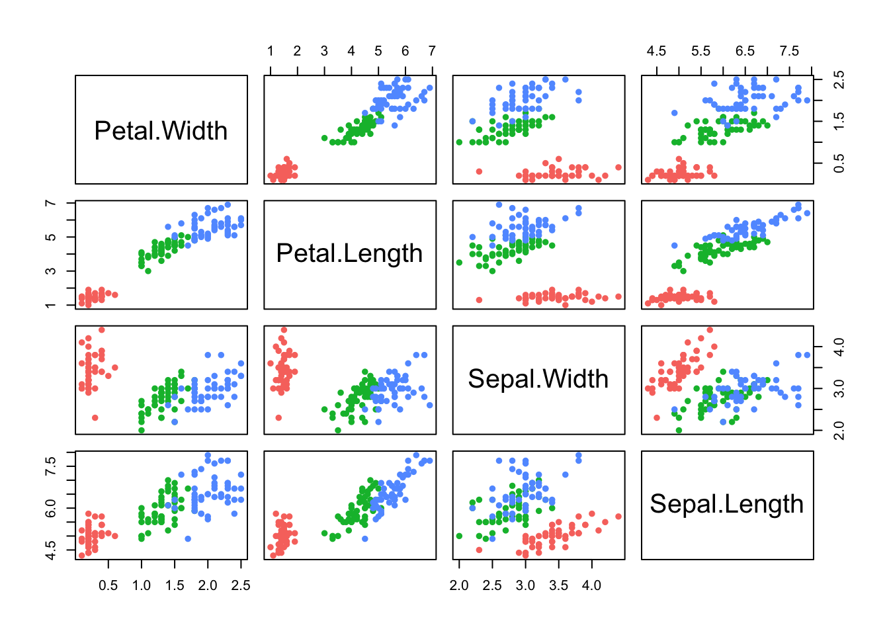
library(lattice)
parallelplot(iris[,1:4], col=c('#f8766d','#00ba38','#619cff')[iris$Species], horizontal=FALSE)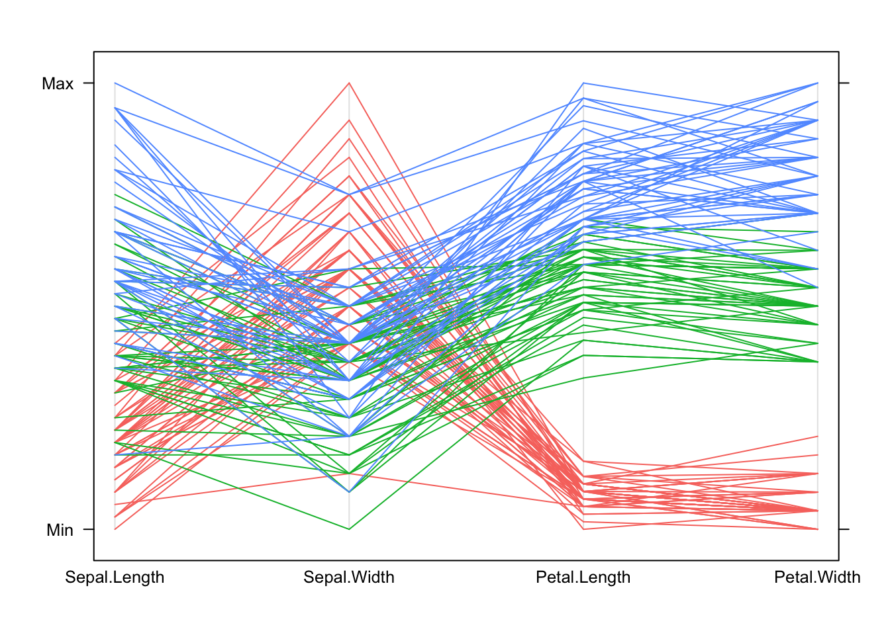
In general:
Each line represents one data point.
The height of each line above the variable label indicates the (relative) size of the value for that data point. The variables are transformed to a common scale to make comparison possible.
All the values for one observation are connected across the plot, so we can see how things change for individuals as we move from one variable to another. Note that this is sensitive to the ordering we choose for the variables in the plot – some orderings of the variables may give clearer pictures than others.
For these data:
We can see how the setosa species (red) is separated from the others on the Petal measurements in the PCP by the separation between the group of red lines and the rest.
Setosa (red) is also generally smaller than the others, except on Sepal Width where it is larger than the other species.
We can also pick out outliers, for instance one setosa iris has a particularly small value of Sepal Width compared to all the others.
Using parallel coordinate plots:
Reading and interpreting a parallel coordinate plot (PCP) is a bit more difficult than a scatterplot, but can be just as effective for bigger problems.
When we identify interesting features, we can then investigate them using more familiar graphics.
A PCP gives a quick overview of the univariate distribution for each variable, and so we can identify skewness, outliers, gaps and concentrations.
However, for pairwise properties and associations then it’s best to draw a scatterplot.
The Guardian newspaper in the UK publishes a ranking of British universities each year and it reported these data in May, 2012 as a guide for 2013. 120 Universities are ranked using a combination of 8 criteria, combined into an ‘Average Teaching Score’ used to form the ranking.
library(GDAdata)
data(uniranks)
## a little bit of data tidying
names(uniranks)[c(5,6,8,10,11,13)] <- c('AvTeach','NSSTeach','SpendPerSt','Careers',
'VAddScore','NSSFeedb')
uniranks1 <- within(uniranks, StaffStu <- 1/(StudentStaffRatio))
## draw the scatterplot matrix
pairs(uniranks1[,c(5:8,10:14)])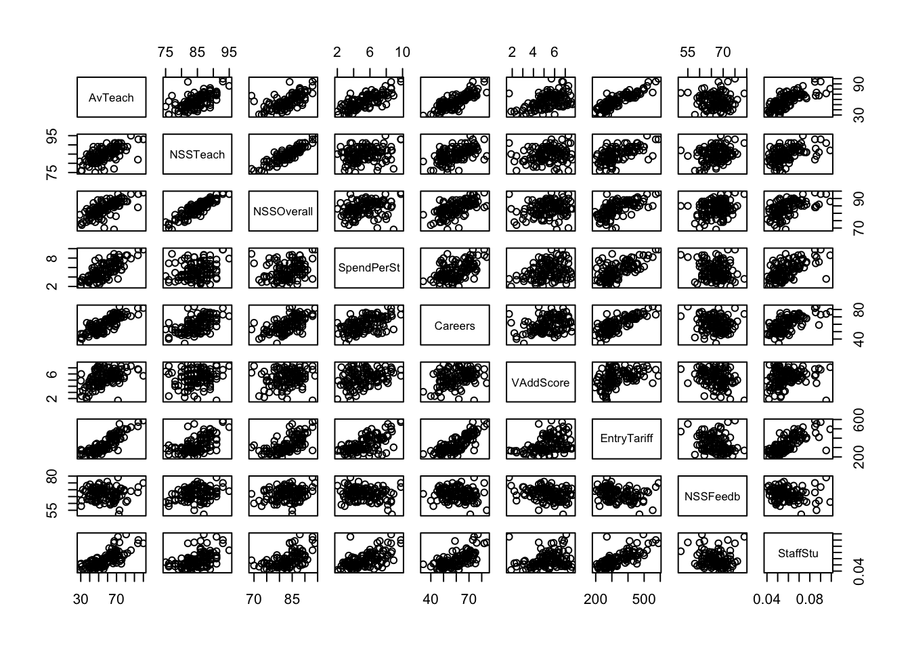
We can see some obvious patterns and dependencies here. What about the parallel coordinate plot?
parallelplot(uniranks1[,c(5:8,10:14)], col='black', horizontal=FALSE)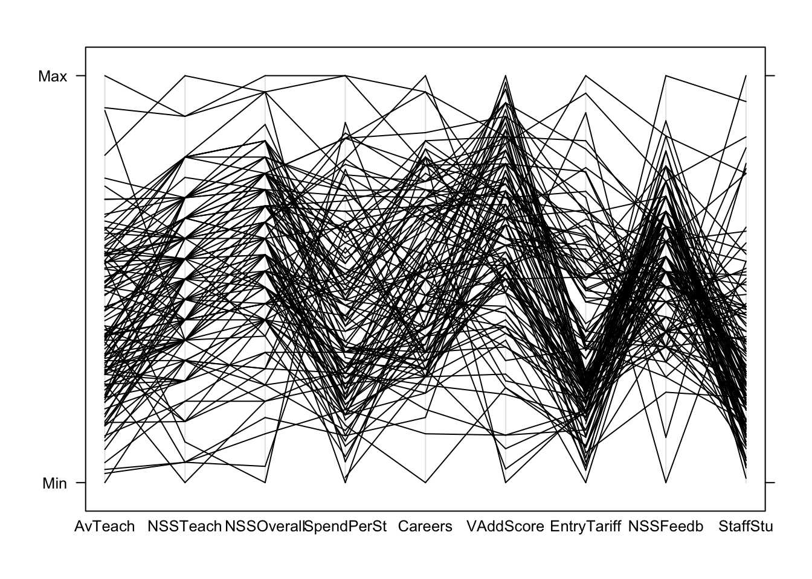
Can we learn anything from this crazy mess of spaghetti?
PCPs are most effective if we colour the lines to represent subgroups of the data. We can colour the Russell Group universities, which unsurprisingly are usually at the top (except on NSSFeedback!)
## create a new variable to represent the group we want
uniranks2 <- within(uniranks1,
Rus <- factor(ifelse(UniGroup=="Russell", "Russell", "not")))
parallelplot(uniranks2[,c(5:8,10:14)], col=c("#2297E6","#DF536B")[uniranks2$Rus], horizontal=FALSE)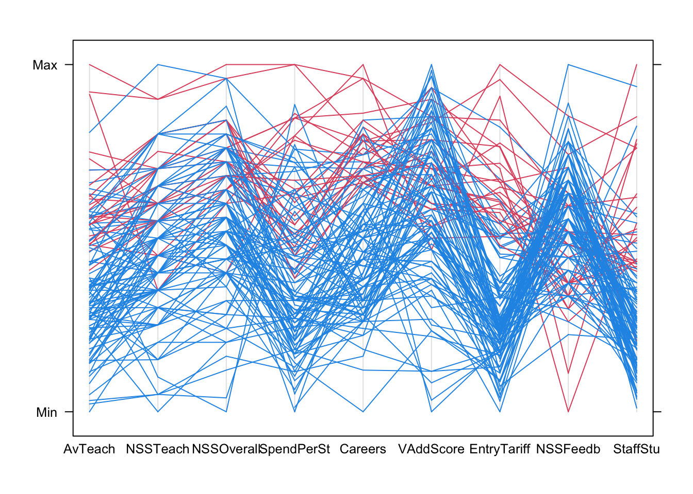
Using colour helps us to diffentiate the lines from the different data points more clearly. Now we can start to explore for features and patterns:
A scatterplot matrix corroborates most of these features, though we’re probably near the limit of what we can read and extract from such a plot!
pairs(uniranks2[,c(5:8,10:14)],col=c("#2297E6","#DF536B")[uniranks2$Rus], pch=16)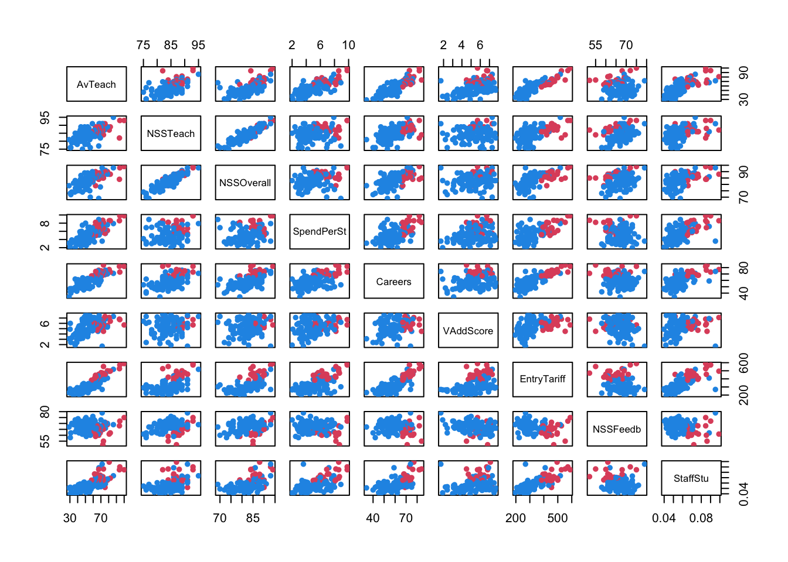
round(cor(Boston),2) ## round to 2dp crim zn indus chas nox rm age dis rad tax ptratio
crim 1.00 -0.20 0.41 -0.06 0.42 -0.22 0.35 -0.38 0.63 0.58 0.29
zn -0.20 1.00 -0.53 -0.04 -0.52 0.31 -0.57 0.66 -0.31 -0.31 -0.39
indus 0.41 -0.53 1.00 0.06 0.76 -0.39 0.64 -0.71 0.60 0.72 0.38
chas -0.06 -0.04 0.06 1.00 0.09 0.09 0.09 -0.10 -0.01 -0.04 -0.12
nox 0.42 -0.52 0.76 0.09 1.00 -0.30 0.73 -0.77 0.61 0.67 0.19
rm -0.22 0.31 -0.39 0.09 -0.30 1.00 -0.24 0.21 -0.21 -0.29 -0.36
age 0.35 -0.57 0.64 0.09 0.73 -0.24 1.00 -0.75 0.46 0.51 0.26
dis -0.38 0.66 -0.71 -0.10 -0.77 0.21 -0.75 1.00 -0.49 -0.53 -0.23
rad 0.63 -0.31 0.60 -0.01 0.61 -0.21 0.46 -0.49 1.00 0.91 0.46
tax 0.58 -0.31 0.72 -0.04 0.67 -0.29 0.51 -0.53 0.91 1.00 0.46
ptratio 0.29 -0.39 0.38 -0.12 0.19 -0.36 0.26 -0.23 0.46 0.46 1.00
black -0.39 0.18 -0.36 0.05 -0.38 0.13 -0.27 0.29 -0.44 -0.44 -0.18
lstat 0.46 -0.41 0.60 -0.05 0.59 -0.61 0.60 -0.50 0.49 0.54 0.37
medv -0.39 0.36 -0.48 0.18 -0.43 0.70 -0.38 0.25 -0.38 -0.47 -0.51
black lstat medv
crim -0.39 0.46 -0.39
zn 0.18 -0.41 0.36
indus -0.36 0.60 -0.48
chas 0.05 -0.05 0.18
nox -0.38 0.59 -0.43
rm 0.13 -0.61 0.70
age -0.27 0.60 -0.38
dis 0.29 -0.50 0.25
rad -0.44 0.49 -0.38
tax -0.44 0.54 -0.47
ptratio -0.18 0.37 -0.51
black 1.00 -0.37 0.33
lstat -0.37 1.00 -0.74
medv 0.33 -0.74 1.00library(corrplot)corrplot 0.95 loadedcorrplot(cor(Boston))
There are clearly strong associations between age and dis, indus and dis, and lstat and medv that may be worth studying closer. chas appears almost uncorrelated to all the other variables – but remember chas was a binary variable, and so the correlation coefficient is meaningless here and we should not draw conclusions from this feature!